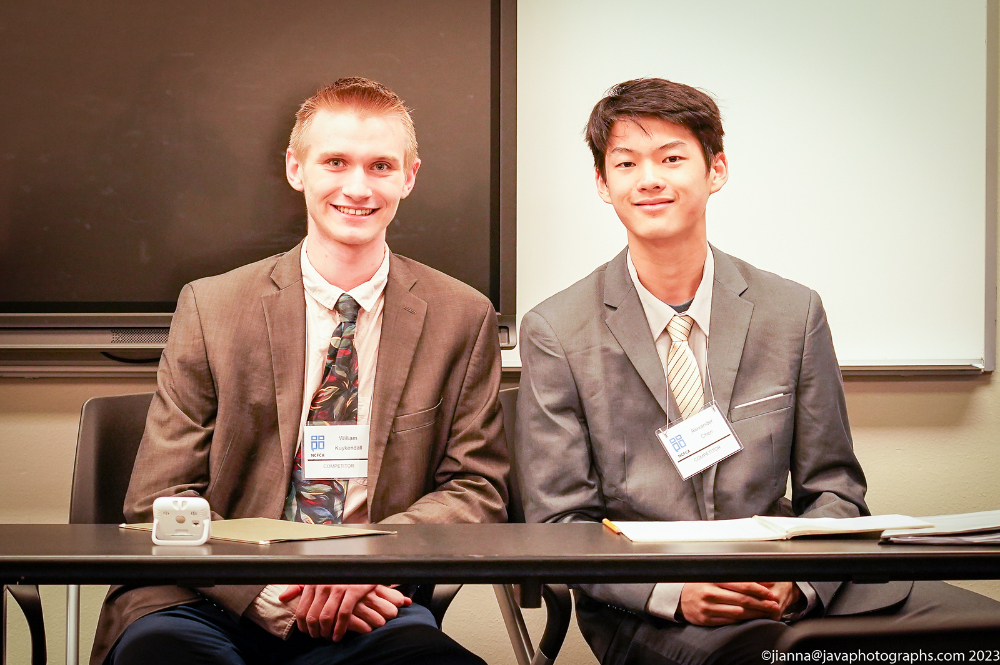

05/07/2024
Last week I competed in the NCFCA Region 11 Regional Championship tournament, the last of my season.
Again, it was an amazing experience. We debated the best of the best this tournament, and it was really fun overall.
We finished with a record of 3-3 (we never had a losing record this year!), getting close to breaking into Regional elimination rounds.
This is my partner's last year in NCFCA, and I want to thank him for everything; literally couldn't have done it without him!

(William Kuykendall and Alexander Chen @ DBU 2024)
It's been a blessing to have such a fruitful first year, and I can't wait for what's to come!